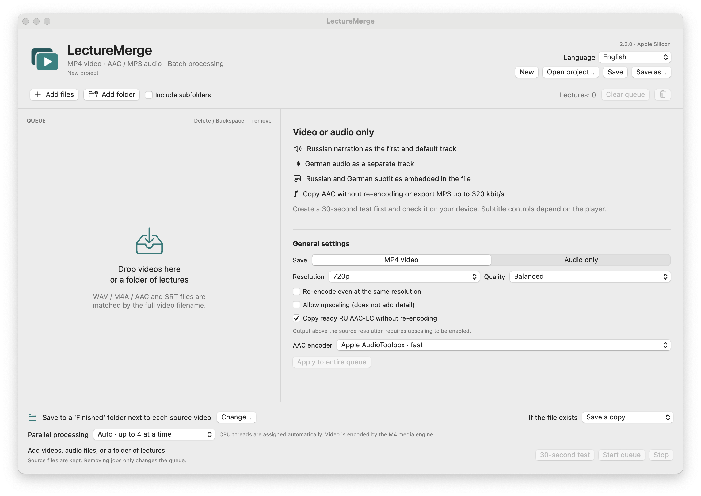

macOS 14+ · Apple Silicon
LectureMerge
Combine lecture video, narration, original audio and subtitles into MP4, or export audio.
Release · 2.2.0Before you startLocal processing without an external service. Ad-hoc signed and not notarized by Apple.


How it works
- Video + narration + subtitles
- Review settings
- Save MP4
First steps
Extract the app archive and add video, audio and subtitles. Check a 30-second sample before the full export.